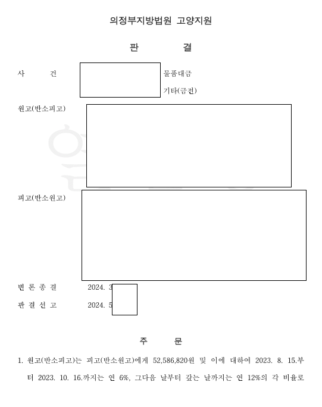
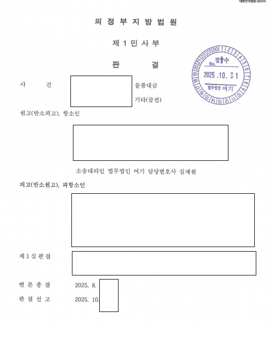
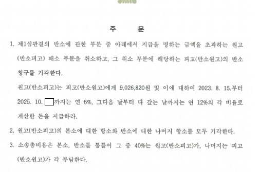

01사건 개요
물품대금을 받지 못해 소송을 냈는데, 상대방이 이 물품공급계약은 사실상 가맹계약이라며 정보공개서 미제공을 이유로 가맹금 반환과 계약 해제를 반소로 청구한 사건입니다. 1심은 반소를 전부 인정했습니다.
02쟁점
- 계속적 계약인 가맹계약에서 '해제'가 인정되는지
- 해제된다면 상대방도 받은 이익을 원상회복해야 하는지
- 반환할 가맹금의 범위
03변호사가 한 일
- 가맹계약이라도 해제가 아니라 가맹금 반환에 그쳐야 한다고 주장했습니다.
- 1심이 원상회복 의무를 의뢰인에게만 지운 잘못을 대법원 판례로 지적했습니다.
- 적정 도매가격을 계산하기 위해 의뢰인과 구입가격 자료를 끝까지 찾아 제출했습니다.
- 항소심 조정안(4,500만 원 지급)을 거부하고 판결을 받았습니다.
04결과
항소심은 가맹금만 반환하면 되고 물품대금은 공제한다고 판단했습니다. 1심에서 5,200만 원을 지급해야 했던 것이 약 900만 원으로 줄었습니다.



이 사례는 원문을 요약해 정리한 것입니다. 사건 경과와 판결문 등 전체 내용은 로톡에 게시된 원문에서 볼 수 있습니다.
로톡에서 전문 보기 →05비슷한 상황이라면
1심에서 졌더라도 가맹사업법 쟁점을 정확히 다투면 항소심에서 결과가 달라질 수 있습니다.
계약서 제목이 '물품공급계약'이면 가맹사업법이 적용되지 않나요?
계약서 이름이 아니라 실제 내용으로 판단합니다. 이름만 물품공급계약이고 실질이 가맹계약인 사건에서 가맹사업법 쟁점을 다퉈 항소심에서 1심 판결을 뒤집은 사례가 있습니다.
가맹본부가 다른 지점 매출을 부풀려 설명했다면 가맹금을 돌려받을 수 있나요?
가맹사업법상 허위·과장 정보제공에 해당하면 가맹금 반환을 요구할 수 있습니다. 가맹거래사 겸 변호사 명의 내용증명과 계약해지 합의 대행으로 10일 만에 가맹금을 반환받은 사례가 있습니다.
정보공개서를 받지 못하고 가맹계약을 했습니다. 가맹금을 돌려받을 수 있나요?
가맹본부는 계약 체결 14일 전까지 정보공개서를 제공해야 합니다. 정보공개서를 받지 못했거나 14일이 지나기 전에 계약했다면 계약일부터 4개월 이내에 가맹금 반환을 요구할 수 있습니다. 기간이 짧으니 바로 내용증명으로 통보하는 것이 좋습니다.
평일 09:00–18:00 변호사가 직접 전화를 받습니다.
재판으로 자리에 없는 경우 로톡으로 상담을 신청하시거나 이메일로 문의해 주세요.
의뢰인이 특정되지 않도록 사실관계를 일부 줄이거나 바꾸어 정리했습니다. 사건의 결과는 구체적인 사실관계와 증거에 따라 달라질 수 있으며, 같은 결과를 보장하지 않습니다.